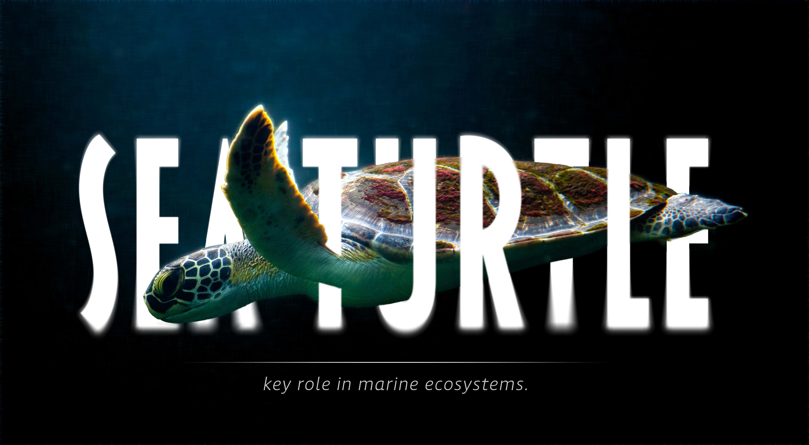

Sea Turtle
Design - Photoshop

Projet Personel. Sea Turtle est une affiche personnelle de sensibilisation aux espèces marines dédiée aux tortues, inspirée des codes visuels des reportages et médias comme National Geographic. L'objectif : créer un visuel immersif et percutant qui met en valeur la tortue marine tout en intégrant une typographie forte directement dans la profondeur de l'image. Composition & incrustation : le titre massif « SEA TURTLE » s'entrelace avec la tortue qui nage entre les lettres, accompagné de la mention « key role in marine ecosystems » placée juste en dessous. Profondeur, flou & texture : un jeu de flou, de texture et d'arrière-plan sombre accentue l'immersion au fond de l'océan et renforce le réalisme de la scène.